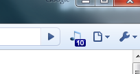
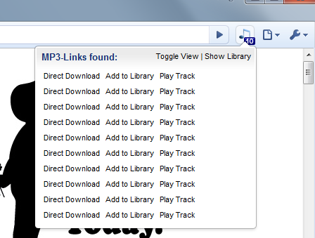

| With Selected: | Create New Category: |
chromeRadio is an Extension for the Google Chrome Browser developed for the GTUG Battle event in Munich, Germany.
chromeRadio is an extension that allows you to discover audio-files on websites you visit in seconds and playback them instantly using the Chrome Browser's built in HTML5 capabilities. It also allows you to store them in a music library and organize them using Categories.
Let us show you how it works. For this brief tutorial we assume the extension has been correctly activated and you see the icon in your browser-bar.
Step 1: Go to a page that has direct links to either .mp3 or .ogg files. youlooknicetoday.com is the website of a (great) podcast and we will use it in this example. As soon as the page finishes to load you should see a tiny badge appear on top of the extension-icon notifiying you of the number of files that have been found by looking at the page's HTML. It should look like this:

Please not that this might not work 100% of the time, because of certain limitiations withing the extension API. If it doesn't it often helps to simply click on another tab and then click again on the tab that contains the music files.
Step 2: When you click the icon you will be presented a popup that lists all the music files that have been found. In our example it's ten files. You will initially see the anchor text of the links, but since that is often not very helpful, a click on "Toggle View" will show you the actual filenames. You can now either playback those files using the "Play Instantly"-Link, or you can add them to your library so you can listen to them later. This is how it should look like on youlooknicetoday.com:

Three people worked on this initial version for ChromeRadio:
We would be happy to hear from you, especially if you are planning to continue developing this extension further. :)
The code of chromeRadio is Copyright 2010 by the original authors.
chromeRadio is free software: you can redistribute it and/or modify it under the terms of the GNU General Public License as published by the Free Software Foundation, either version 3 of the License, or (at your option) any later version.
This program is distributed in the hope that it will be useful, but WITHOUT ANY WARRANTY; without even the implied warranty of MERCHANTABILITY or FITNESS FOR A PARTICULAR PURPOSE. See the GNU General Public License for more details.
You should have received a copy of the GNU General Public License along with this program. If not, see http://www.gnu.org/licenses/.